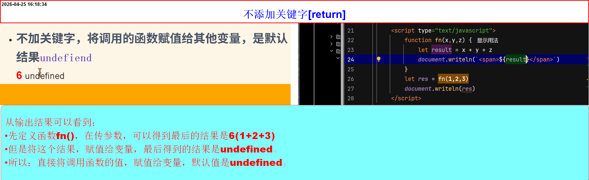
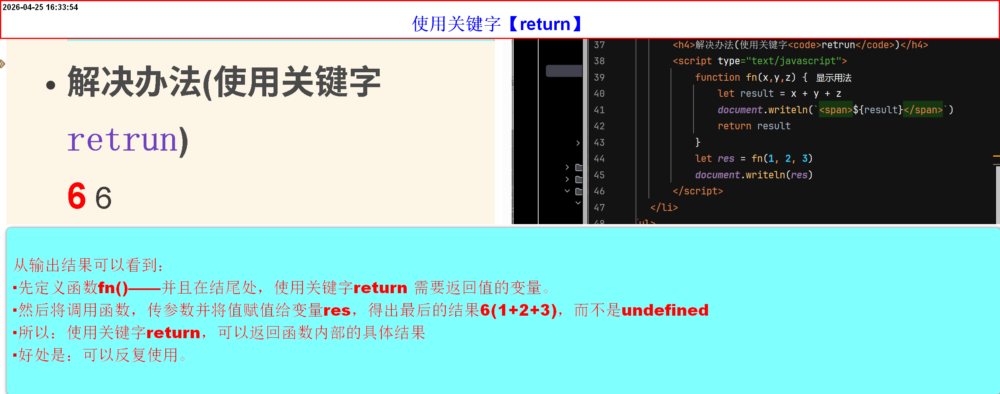
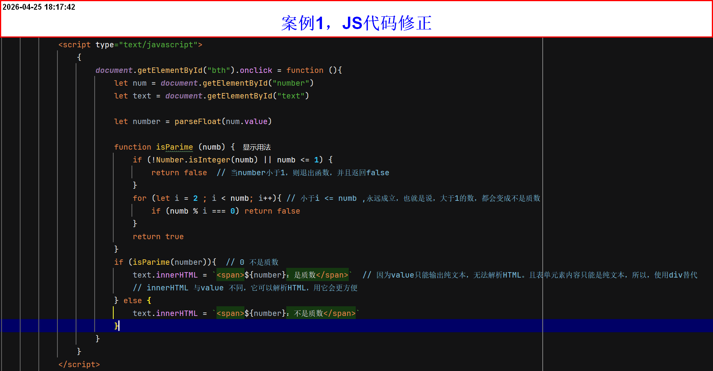

函数的返回值及其案例
函数的返回值
- 函数调用本身也是一个表达式，表达式就应该有一个值出现
- 使用
return关键字可以给函数执行完毕一个结果 - 语法:
return 需要返回值(可以返回任何在当前函数作用域链上能够访问到的变量、表达式的结果、字符串、字面量、函数调用结果。。。。) -
注意：
- return不是函数必要的，关键看需求(后续需要用到函数的返回值)
- return 后面的代码无法继续执行
- return可以返回任何数据类型的值
-
一个函数中可以有多个
return，但是只执行第一个遇到的
常用于条件分支，提前退出函数 - 没有
return或只写return函数返回均是undefined - 返回值可以被任何变量接受，也可以直接参与运算
- console.log 只是在控制台打印，不影响函数结果；return 才是给调用者值
-
不加关键字，将调用的函数赋值给其他变量，是默认结果
undefiend
-
解决办法(使用关键字
return)
案例
-
案例1(通过返回值，判断是否为质数)
请输入数字 输出结果 
-
案例2(写一个判断质数方法，后续使用方法，显示在300~500，1000~1500范围之间的质数)
JS代码